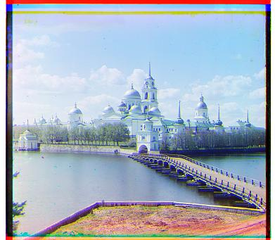
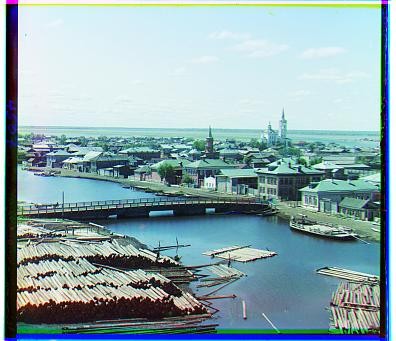

Cathedral: Red:[12,3] Green:[5,2]

Monastery: Red:[3,2] Green:[-3,2]

Tobolsk: Red:[58,-4] Green:[25,4]
The goal of this project is to take digitized glass plate photographs from Sergei Prokudin-Gorskii and produce a full-color image. Prokudin-Gorskii captured scenes using three separate black-and-white exposures, each with a red, green, or blue filter. The Library of Congress purchased RGB glass plate negatives documenting the final years of the Russian Empire. The collection has recently been digitized and can be viewed online at the library of congress. My task is to align these negatives into a single color photograph.
The first step is to split the single input image into three equal parts representing the blue (B), green (G), and red (R) channels. After the red and green channels are aligned to the blue channel, they are stacked back together. The final output is an RGB image composed of the aligned red channel, the reference green channel, and the aligned blue channel. For small images, we use an exhaustive search between (-15, 16) for both x and y to find the best alignment. For larger tif images, we use the image pyramid approach.
Cathedral: Red:[12,3] Green:[5,2]
Monastery: Red:[3,2] Green:[-3,2]
Tobolsk: Red:[58,-4] Green:[25,4]
The L2 norm, or Euclidean distance is calculated by taking the square root of the sum of the squared differences taken over the pixel values: sqrt(sum(sum((image1-image2).^2)). In my implementation, NCC performs better than L2. NCC is calculated through a dot product between two normalized image vectors: (image1./||image1|| and image2./||image2||). For each possible x and y shift within (-15, 16), it calculates the NCC between a shifted version of one image and a reference image. The shift that yields the highest NCC score is considered the best alignment.
To handle large and high-resolution tif images efficiently, I used a multi-scale image pyramid approach. I implemented a recursive function that:
This coarse-to-fine approach significantly speeds up the process, making it feasible to align large .tif files, which would otherwise be computationally expensive and time consuming.
A key refinement that helped me get more precise images is the use of aggressive cropping. Before any alignment, I crop 15% of each channel, leaving behind 85% of the original image. This is done to remove artifacts and lens distortions that are common on the edges of the original photographs. The alignment and final color image are then based on these cropped images.
I had trouble with Emir but then I was able to get a better alignment through changing the color order and aligning based on the green channel instead of the blue channel.
Emir based on blue channel

Emir based on green channel
I had trouble with Emir but then I was able to get a better alignment through changing the color order and aligning based on the green channel instead of the blue channel.

Cathedral: Red:[12,3] Green:[5,2]

Church: Red:[58,-5] Green:[25,3]
Emir: Red:[40,107] Blue:[23,50]

Harvesters: Red:[124,13] Green:[60,16]
Here are the final results
Cathedral: Red:[12,3] Green:[5,2]
Church: Red:[58,-5] Green:[25,3]
Emir: Red:[40,107] Blue:[23,50]
Harvesters: Red:[124,13] Green:[60,16]

Icon: Red:[88,23] Green:[41,17]

Italil: Red:[77,35] Green:[38,21]

Lastochikino: Red:[76,-9] Green:[-3,-2]
Lugano: Red:[22,-93] Green:[-30,-93]

Melons: Red:[132,4] Green:[82,2]

Monastery: Red:[3,2] Green:[-3,2]

Self Portrait: Red:[58,-4] Green:[25,4]
Siren: Red:[96,-25] Green:[49,-7]

Three Generations: Red:[112,10] Green:[53,13]

Tobolsk: Red:[58,-4] Green:[25,4]

cabin: Red:[126,-4] Green:[59,4]
monrepos park: Red:[2,165] Green:[3,44]

route: Red:[31,34] Green:[20,18]